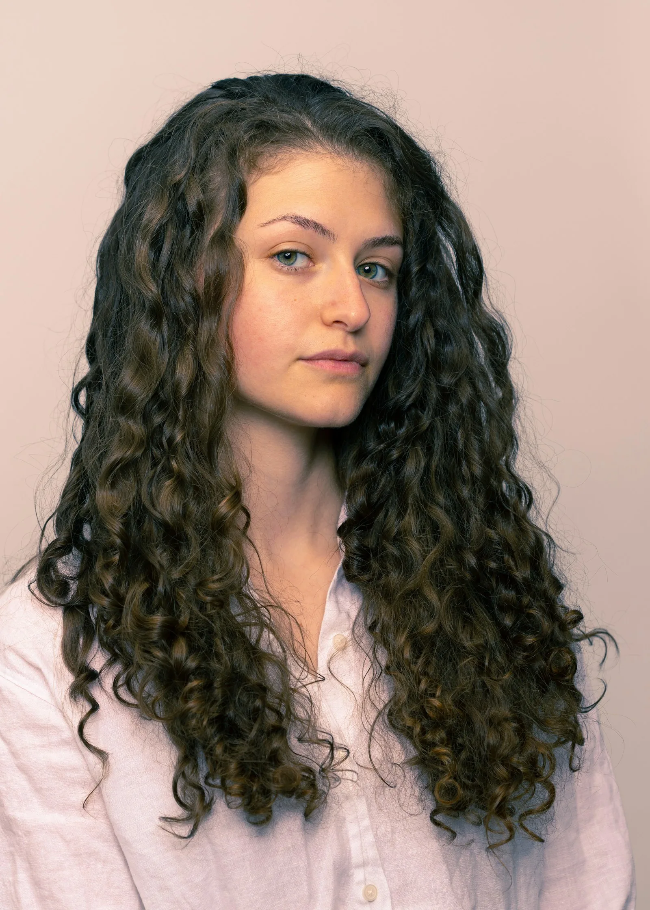
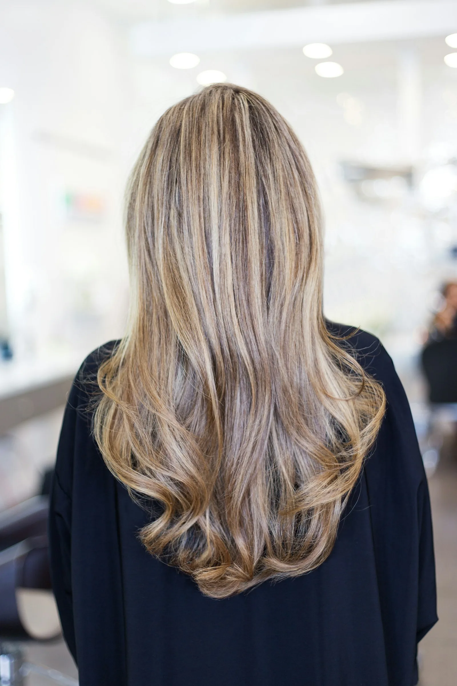
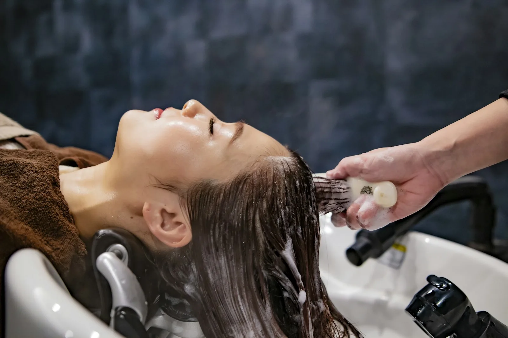
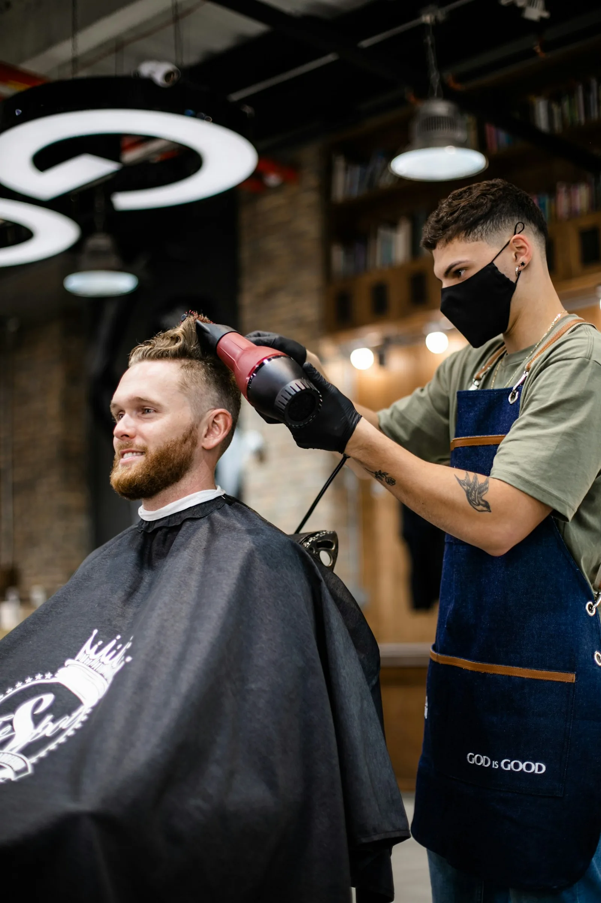

sin sorpresas
Servicios y precios.
Precios cerrados para pelo corto y medio. Para melenas largas o muy densas puede haber un pequeño suplemento: te lo decimos antes de empezar.

Cortes
para todos los largos- Corte y peinado38 €Lavado, corte y secado · 1 h
- Corte de caballero22 €Tijera o máquina, con lavado · 30 min
- Arreglo de flequillo8 €Sin cita, entre servicios · 10 min
- Corte infantil16 €Hasta 10 años · 30 min
- Arreglo de barba15 €Perfilado con navaja y toalla caliente · 20 min

Rizos
nuestra especialidad- Corte de rizos en seco48 €Método rizo a rizo, con rutina para casa · 1 h 15 min
- Definición de rizos32 €Lavado, producto y secado con difusor · 45 min
- Diagnóstico de rizogratisPorosidad, tipo de rizo y productos · 15 min

Color
vegano y sin amoniaco- Color raíz42 €Tinte vegano sin amoniaco · 1 h 30 min
- Color completo58 €Medios y puntas incluidos · 2 h
- Balayage95 €Aclarado a mano alzada y matiz · 2 h 30 min
- Matiz / gloss30 €Brillo y corrección de tono · 45 min
- Colores fantasíadesde 70 €Precio tras consulta · —

Tratamientos
cuidado profundo- Tratamiento hidratante28 €Mascarilla y masaje craneal · 30 min
- Keratina vegetal120 €Alisado suave sin formol · 2 h
- Ritual detox35 €Exfoliación del cuero cabelludo y aceites · 40 min

Eventos
novias y ocasiones- Recogido65 €Con prueba previa incluida · 1 h
- Peinado de noviadesde 180 €Prueba + día de la boda · —
- Maquillaje45 €Con productos veganos · 45 min

Barbería
clásica y tranquila- Corte + barba32 €Con toalla caliente · 45 min
- Afeitado clásico20 €Navaja y bálsamo · 30 min
- Rapado12 €A máquina, un solo número · 15 min
IVA incluido. Datos de ejemplo: esta peluquería es ficticia.